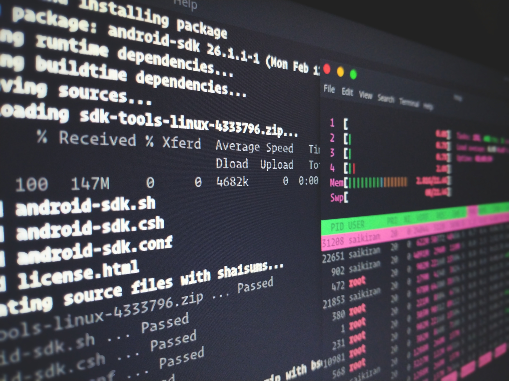

Work Experience
Software Engineer Intership, Pilot Photonics Ltd.
I began my time with Pilot Photonics as a technician intern. During this time, I diagnosed and fixed issues within equipment returned by customers. This involved liaising with the customer to better understand the problem they were facing, then disassembling the piece of equipment to reach the source of the problem and finally, brainstorming with the team to achieve a solution for the issue.
Due to Covid-19, I was required to work from home. My role in the company changed to a software engineer intern. A lot of my time was spent further developing and troubleshooting a new GUI for the company’s equipment. To achieve this, I was required to learn new coding languages, methodologies and further develop my programming skillset. The Linux terminal was also used a lot, and so I quickly became accustomed to working within directories and text editors of the terminal.
Sales Assistant, Penneys Ltd.
 Working in Penneys while completing my college degree was a great experience as it allowed me to develop many soft skills. As a sales assistant I worked in a fast-paced environment, developing time management skills and providing a high-quality service to customers. On a daily basis I maintained my work area, floor stock levels and communicated with managers and supervisors. Emphasis was placed on safety in the workplace through training of manual handling, fire safety and warehouse awareness. While working on cashpoints, I complied with money procedures such as spot checks and cashing up tills at the end of the day.
Working in Penneys while completing my college degree was a great experience as it allowed me to develop many soft skills. As a sales assistant I worked in a fast-paced environment, developing time management skills and providing a high-quality service to customers. On a daily basis I maintained my work area, floor stock levels and communicated with managers and supervisors. Emphasis was placed on safety in the workplace through training of manual handling, fire safety and warehouse awareness. While working on cashpoints, I complied with money procedures such as spot checks and cashing up tills at the end of the day.
Technical Skills
 During my college degree, there was a large emphasis on data manipulation and analysis. Initially this was achieved using Microsoft Excel. As my Python programming skills improved, I began to use libraries such as Matplotlib, NumPy and Pandas to work with Data. I have also learned the fundamentals of MatLab while working with image processing and C++ to control Arduinos.
During my college degree, there was a large emphasis on data manipulation and analysis. Initially this was achieved using Microsoft Excel. As my Python programming skills improved, I began to use libraries such as Matplotlib, NumPy and Pandas to work with Data. I have also learned the fundamentals of MatLab while working with image processing and C++ to control Arduinos.
Since completing my college degree I have increased my scope of programming languages and technology. I have achieved this by completing online courses in web development, IT infrastructure and object-oriented programming along with undertaking projects such as constructing this website. I have recently began using GitHub to work with projects which is proving to be a powerful tool.
Laboratory Skills
 A large portion of my college degree involved laboratory work. On a weekly basis, I was required to complete an experiment, collect data and create a report detailing my findings. These reports were initially written with Microsoft Word before I learned how to use LaTeX in order to create a more professional, high standard report. Due to the limited time amount of time to complete an experiment, I had to quickly become familiar with the piece of equipment I was using in order to obtain meaningful results. I have used equipment such as an oscilloscope, lock-in amplifier and Geiger-Müller tube. Many pieces of equipment required assembly or maintenance during experiments. This has greatly developed my electronics skillset of troubleshooting and fixing a piece of equipment.
A large portion of my college degree involved laboratory work. On a weekly basis, I was required to complete an experiment, collect data and create a report detailing my findings. These reports were initially written with Microsoft Word before I learned how to use LaTeX in order to create a more professional, high standard report. Due to the limited time amount of time to complete an experiment, I had to quickly become familiar with the piece of equipment I was using in order to obtain meaningful results. I have used equipment such as an oscilloscope, lock-in amplifier and Geiger-Müller tube. Many pieces of equipment required assembly or maintenance during experiments. This has greatly developed my electronics skillset of troubleshooting and fixing a piece of equipment.
During my degree, I completed electronics labs and an electronics project. The electronics labs encompassed circuit building with breadboards, Arduinos and components such as transistors, logic gates and LCD displays. Detailed reports were completed to show the building process and output of each circuit. This also increased my knowledge of the circuitry and electronic logic. The electronics project required me to build a circuit from a circuit diagram. I was responsible for every aspect of this project including ordering components, circuit design, building the circuit and maintaining a detailed journal of the process.
All of my technical and laboratory skills concluded to complete my final year thesis. To complete this project, I was required to build a piece of measurement equipment and program it using LabView before integrating it into a larger system. I then used this instrument to measure the change in resistance of samples as they were aged in a chamber. Along with the construction of this instrument and collection of data, I wrote a literature survey and final report. This final report detailed my findings and conclusions. As part of this project, I presented my findings to a number of lecturers.
Here is a more in-depth description of my final year thesis.